Texture Analysis of Landsat Imagery: Model-Based Methods
Model-based texture methods assume that the image was generated by a spatial stochastic process, fit that model locally, and use the fitted parameters as texture features.
Overview
A small number of parameters then summarizes the whole neighbourhood: how strongly a pixel depends on its neighbours, how rough the intensity surface is, how much variation the model cannot explain. This notebook covers three model families (Markov Random Fields, fractals and autoregressive models), explains their theory, computes them on the NIR band of a Landsat 9 scene over Las Vegas with geolattice.rsense.texture, and tests what they add to spectral information.
Image texture in brief
Spectral values tell us what a pixel is made of; texture tells us how pixel values are arranged around it. Texture is the spatial variation of gray levels inside a neighbourhood and describes properties such as smoothness, coarseness, regularity, directionality and contrast. Haralick, Shanmugam and Dinstein (1973) noted that tone and texture are always present together in an image, but one may dominate the other depending on the scene.
At Landsat’s 30 m resolution many land-cover classes overlap spectrally: urban fabric, bare soil and rock are all bright and dry in an arid scene; crop types or forest stands can share the same NDVI; rough terrain mixes lit slopes and shadow within a few pixels. Texture separates such classes because it responds to pattern, not only to brightness, and texture layers are routinely stacked with bands and indices as predictors in land-cover classification, urban mapping, forest-structure modelling and soil mapping.
Methods are usually grouped into six families. This series covers them in five notebooks:
All methods come from geolattice.rsense.texture. Every function accepts a 2-D xr.DataArray (or NumPy array) and returns a georeferenced result with the same shape as the input; inputs with leading dimensions (band, time, polarization) are processed slice by slice, and multi-feature methods return an xr.Dataset with one variable per feature.
Theory 1: Markov Random Fields
A Markov Random Field (MRF) models an image as a random field in which the value of a pixel depends only on its neighbours \(\mathcal{N}(s)\) (the Markov property):
where the energy \(U\) is a sum of potentials \(V_c\) over cliques (sets of mutually neighbouring pixels) and \(Z\) is a normalizing constant (Geman and Geman 1984; Cross and Jain 1983). With pair cliques and a quadratic potential (a Gaussian MRF, the continuous analogue of the Ising/Potts model) \(V_{\{s,t\}} = \beta\,(g_s - g_t)^2\). A low energy means the configuration is likely under a smoothness prior; a high energy means neighbours disagree.
Fitting a full MRF (estimating \(\beta\) for several neighbour directions) is expensive. tx.mrf_texture_energy uses the clique energy itself as the feature: the mean squared difference between a pixel and its 4 (first-order) or 8 (second-order) neighbours, averaged over a window. MRFs are the classic prior in unsupervised segmentation of SAR and optical images, where this energy is the quantity the segmentation tries to minimize.
Theory 2: Fractal dimension
Mandelbrot (1982) showed that many natural surfaces are self-similar: they look statistically alike at different magnifications. Pentland (1984) proposed treating an image’s intensity as a 3-D surface \(z = g(x, y)\) and measuring its fractal dimension\(D\). A smooth surface has \(D = 2\); the rougher and more space-filling it is, the closer \(D\) gets to 3. For fractional Brownian surfaces \(D = 3 - H\), where \(H\) is the Hurst exponent.
Differential box-counting (Sarkar and Chaudhuri 1994) estimates \(D\) for an \(M \times M\) tile. The tile is split into \(r \times r\) grid cells, and the intensity axis is scaled to the same range as the spatial axis, so it can be divided into boxes of height \(r\). In each cell the number of boxes needed to cover the surface from its minimum \(l\) to its maximum \(k\) is \(n_r = \lceil k/r \rceil - \lfloor l/r \rfloor + 1\). The total count \(N_r = \sum n_r\) follows a power law
\[N_r \propto r^{-D}\quad\Longrightarrow\quad D = \text{slope of } \log N_r \text{ against } \log(1/r).\]
Theory 3: Autoregressive models
A simultaneous autoregressive (SAR) model expresses each pixel as a linear combination of its neighbours plus noise (Kashyap and Chellappa 1983; Mao and Jain 1992):
The coefficients \(\theta_t\) describe the strength and direction of spatial dependence, and \(\sigma^2\) the unexplained variation. tx.autoregressive_texture fits the isotropic one-parameter version \(g_s \approx \rho\,\bar g_{\mathcal{N}_4}(s)\) in every window by least squares:
Because the neighbour mean \(\bar g_{\mathcal{N}_4}\) averages four pixels, its variance is lower than the variance of \(g\) wherever pixels are only partly correlated, so \(\hat\rho\) is often slightly above 1 on real images. It is best read as a relative measure of spatial coherence; the residual measures how much of the local variation is not explained by the neighbours.
Applications
Application
Method
Why it works
Unsupervised segmentation of SAR and optical images
MRF energy / MRF priors
Smooth regions have low clique energy, boundaries high
Speckle and noise characterization
MRF energy, AR residual
Uncorrelated noise breaks neighbour dependence
Terrain and surface roughness from DEMs or images
Fractal dimension
Geomorphic surfaces are approximately self-similar
Forest canopy structure and disturbance
Fractal dimension, AR coefficients
Gaps and crown size change roughness and correlation
Urban morphology
Fractal dimension, MRF energy
Built-up areas are rougher and less coherent than natural cover
Sea-ice and oil-slick detection in SAR
MRF segmentation, AR models
Slicks damp waves and change local correlation
Geostatistics and spatial statistics
AR models
The same models describe spatial autocorrelation of any variable
Learning objectives
Explain the Markov property, Gibbs energy and clique potentials of an MRF.
Explain fractal dimension and estimate it with differential box-counting, step by step.
Explain autoregressive texture models and interpret the coefficient ρ and the residual.
Compute MRF energy, fractal dimension and AR texture on Landsat NIR with geolattice.rsense.texture, on the study window and on the full scene.
Compare model-based texture signatures and test what they add to an unsupervised classification.
All four bands come from the Las Vegas scene used in the Landsat module (09_02_04_landsat_half_a_century_of_earth_observation): path 39, row 35, 8 July 2024, UTM zone 11N (EPSG:32611), 30 m, 1,679 × 1,512 pixels, stored as unsigned 16-bit DN with 0 as the fill value.
Contents
Setup
Loading the Landsat bands and the study window
Markov Random Field energy
Fractal dimension
Autoregressive texture
Model-based texture of the full scene
Application: texture signatures and clustering
Summary and exercises
Setup
Installation. This notebook needs installation option 5 (core, spatial analysis, spatial statistics, geostatistics and remote sensing): pip install "geolattice[remote-sensing]". See “Installation options” in the GeoLattice README.
Code
# Setup: silence noisy warnings, import the libraries and choose the array backend.import warningswarnings.filterwarnings("ignore", category=UserWarning) # hide routine library warningswarnings.filterwarnings("ignore", category=RuntimeWarning) # e.g. 'mean of empty slice' in all-NaN windowswarnings.filterwarnings("ignore", category=FutureWarning) # deprecation notices from pandas and xarrayimport time # time each texture computationfrom pathlib import Path # portable file pathsimport numpy as np # arraysimport pandas as pd # tablesimport xarray as xr # labelled rasters (DataArray, Dataset)import rasterio # GeoTIFF reading and writingimport matplotlib.pyplot as plt # figuresfrom matplotlib.patches import Rectangle # draw the study-window rectangleimport geolattice.rsense as rs # GeoLattice remote sensing: reading, scaling and plottingfrom geolattice.rsense import texture as tx # GeoLattice texture functionsrasterio.Env(CPL_LOG="/dev/null").__enter__() # silence GDAL log messages for the whole sessionplt.rcParams.update({"figure.dpi": 90}) # figure resolution# "cpu" keeps every array on NumPy; the texture functions copy GPU arrays to the CPU anyway.# report the GeoLattice version and switch to the NumPy (CPU) backendprint("geolattice.rsense", rs.__version__, "| backend:", rs.set_backend("cpu"))
geolattice.rsense 0.3.49 | backend: cpu
Loading the Landsat bands and the study window
The files hold raw Collection 2 Level-2 digital numbers (DN). We read them with rs.read, put them in one xr.Dataset, and convert them to surface reflectance with rs.optical.scale, which applies reflectance = DN × 0.0000275 − 0.2 and turns the fill value 0 into NaN.
Window-based texture is easier to see, and much faster to compute, on a smaller area. We work on a 512 × 512 pixel window (15.4 × 15.4 km) on the eastern edge of Las Vegas that contains four very different surfaces:
the regular street grid of the city (west),
the smooth, bare alluvial fan below Frenchman Mountain (centre),
the folded sedimentary ridges of Frenchman Mountain (east),
the vegetated channel of the Las Vegas Wash (south), red in colour infrared.
Code
# 1. Read each band as a 2-D DataArray (drop the singleton "band" dimension).DATA = Path("../../../../Data/00_shared/data_remote_sensing/landsat9_vegas_20240708/LC09_L2SP_039035_20240708_02_T1") # Landsat 9 scene, path 39 row 35, 8 July 2024BANDS = ["blue", "green", "red", "nir"] # the four bands used in this notebook# read each band; masked=False keeps the raw digital numbers (DN)ls_dn = xr.Dataset({b: rs.read(DATA /f"{b}.tif", masked=False).squeeze("band", drop=True)for b in BANDS}) # one variable per bandls_dn = ls_dn.rio.write_crs(ls_dn["red"].rio.crs) # store the CRS on the Dataset as a whole# 2. Scale DN to surface reflectance (fill value 0 becomes NaN) and clip to [1e-4, 1].# Landsat Collection 2 scale and offset: DN -> reflectancels = rs.optical.scale(ls_dn, sensor="landsat").clip(min=1e-4, max=1.0)# scene size, pixel size and CRSprint(f"{ls.rio.width} x {ls.rio.height} pixels at {ls.rio.resolution()[0]:.0f} m, CRS {ls.rio.crs}")# 3. Study window (rows/columns in the full scene) and the NIR band used for most texture measures.WIN =dict(y=slice(500, 1012), x=slice(900, 1412)) # 512 x 512 pixel window (rows 500-1011, columns 900-1411)sub = ls.isel(WIN) # all four bands inside the windownir = sub["nir"] # the NIR band of the window
1679 x 1512 pixels at 30 m, CRS EPSG:32611
Code
# Where the study window lies, and how it looks in natural colour and colour infrared.fig, axes = plt.subplots(1, 3, figsize=(17, 5.5)) # three panels side by side# full scene, red-green-bluers.viz.plot_rgb(ls, "true_color", ax=axes[0], title="Las Vegas, Landsat 9, 8 Jul 2024 (R, G, B)")# the study window in yellow (x = column 900, y = row 500)axes[0].add_patch(Rectangle((900, 500), 512, 512, fill=False, ec="yellow", lw=2))# the window in natural colourrs.viz.plot_rgb(sub, "true_color", ax=axes[1], title="Study window, natural colour")# NIR, red, green: vegetation appears redrs.viz.plot_rgb(sub, "false_color", ax=axes[2], title="Study window, colour infrared (NIR, R, G)")for a in axes: # hide the pixel ticks a.set_xticks([]); a.set_yticks([])plt.tight_layout(); plt.show() # arrange and draw
Code
# three 40 x 40 pixel sample boxes (rows, columns) in the study windowBOXES = {"Urban grid": (slice(100, 140), slice(40, 80)),"Alluvial fan": (slice(300, 340), slice(270, 310)), # gravel slopes"Mountain ridges": (slice(130, 170), slice(400, 440))} # rugged terrain# one colour per boxCOLORS = {"Urban grid": "#d7191c", "Alluvial fan": "#fdae61", "Mountain ridges": "#2b83ba"}
Markov Random Field energy
A toy check: smooth vs. noisy fields
Three synthetic fields with the same variance: a smooth (strongly correlated) field, a moderately correlated field and white noise. The clique energy rises as spatial dependence weakens.
Code
from scipy.ndimage import gaussian_filter # smoothingrng = np.random.default_rng(0) # random generator with a fixed seedfields = {} # three synthetic surfaces# smoothing sigma per surface (0 = none)for name, s in [("smooth (sigma = 6)", 6), ("moderate (sigma = 2)", 2), ("white noise", 0)]: f = rng.normal(size=(128, 128)) # white Gaussian noise f = gaussian_filter(f, s) if s else f # smooth it unless sigma is 0 fields[name] = (f - f.mean()) / f.std() # standardise to mean 0, std 1fig, axes = plt.subplots(1, 3, figsize=(13, 4.3)) # three panelsenergy = {} # mean MRF energy per surfacefor ax, (name, f) inzip(axes, fields.items()): # loop over the surfaces ax.imshow(f, cmap="gray"); ax.set_xticks([]); ax.set_yticks([]) # show the surface, no ticks# mean energy with 4 and 8 neighbours energy[name] = {f"{n}-neighbour energy": float(np.mean(tx.mrf_texture_energy(f, size=9, neighborhood=n))) for n in (4, 8)}# title with the 4-neighbour energy ax.set_title(f"{name}\nenergy (4-nbr) = {energy[name]['4-neighbour energy']:.3f}")plt.tight_layout(); plt.show() # arrange and draw# show the tablepd.DataFrame(energy).round(3)
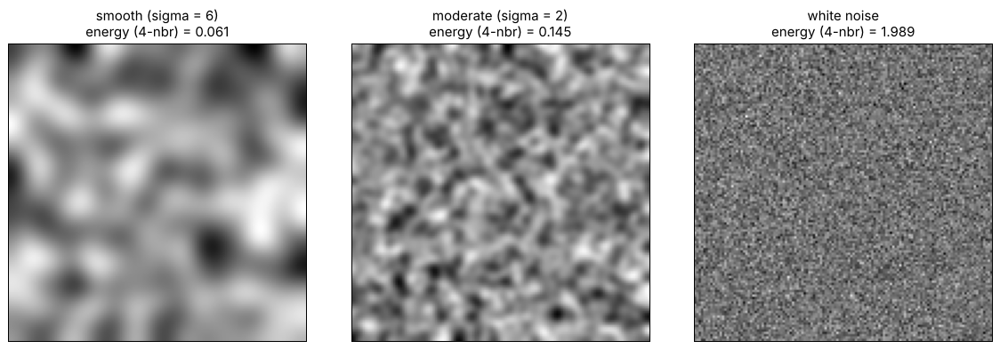
smooth (sigma = 6)
moderate (sigma = 2)
white noise
4-neighbour energy
0.061
0.145
1.989
8-neighbour energy
0.091
0.211
1.996
Energy rises from 0.06 for the smooth field to 0.15 for the moderately correlated field and 1.99 for white noise.
For unit-variance white noise the expected squared difference between two independent pixels is 2, which is what the 4-neighbour energy returns. Correlated fields have much lower energy.
MRF energy of the Landsat window
tx.mrf_texture_energy(img, size, neighborhood) returns one layer: the mean clique energy in a size × size window, with a 4- or 8-pixel neighbourhood.
Code
t0 = time.time() # start the timer# mean squared difference to the 4 nearest neighbours, in 9 x 9 windowsmrf4 = tx.mrf_texture_energy(nir, size=9, neighborhood=4)mrf8 = tx.mrf_texture_energy(nir, size=9, neighborhood=8) # the same with all 8 neighboursprint(f"mrf_texture_energy x2: {time.time() - t0:.2f} s") # run timefig, axes = plt.subplots(1, 3, figsize=(17, 5)) # three panels# log energy, 4 neighboursrs.viz.plot_raster(np.log10(mrf4), ax=axes[0], cmap="magma", title="log10 MRF energy, 4-neighbour")# log energy, 8 neighboursrs.viz.plot_raster(np.log10(mrf8), ax=axes[1], cmap="magma", title="log10 MRF energy, 8-neighbour")# ratio: how much the diagonal neighbours addrs.viz.plot_raster(mrf8 / mrf4, ax=axes[2], cmap="RdBu_r", title="8-neighbour / 4-neighbour energy")for a in axes: # no ticks a.set_xticks([]); a.set_yticks([])plt.tight_layout(); plt.show() # arrange and draw
mrf_texture_energy x2: 0.02 s
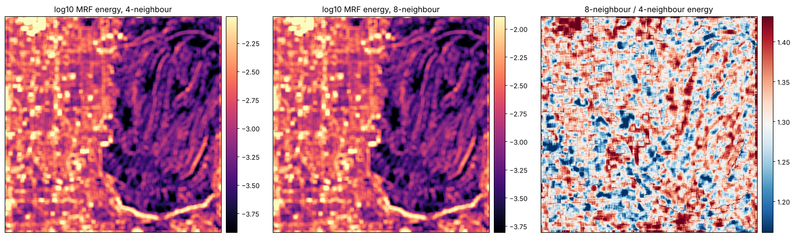
MRF energy is about seven times higher in the city than on the fan or the ridges (log10 −2.59 against −3.44 and −3.43), and the Wash stands out as a high-energy line. The 8/4 ratio lies between 1.28 and 1.33 in all three boxes: at 30 m every surface is spatially correlated, so diagonal neighbours are always less similar than direct ones.
Diagonal neighbours are √2 farther away than the four direct neighbours. On a spatially correlated surface they are therefore less similar to the centre, and the 8-neighbour energy is higher than the 4-neighbour energy (a ratio near 1.5 for the smooth toy fields). For independent pixels distance does not matter and the ratio is 1, as for the white-noise field.
Code
# Effect of the pooling window.fig, axes = plt.subplots(1, 3, figsize=(17, 5)) # three windowsfor ax, s inzip(axes, [3, 9, 21]): # 3, 9 and 21 pixels# log MRF energy in this window rs.viz.plot_raster(np.log10(tx.mrf_texture_energy(nir, size=s)), ax=ax, cmap="magma", title=f"log10 MRF energy, window {s} x {s}") ax.set_xticks([]); ax.set_yticks([]) # no ticksplt.tight_layout(); plt.show() # arrange and draw
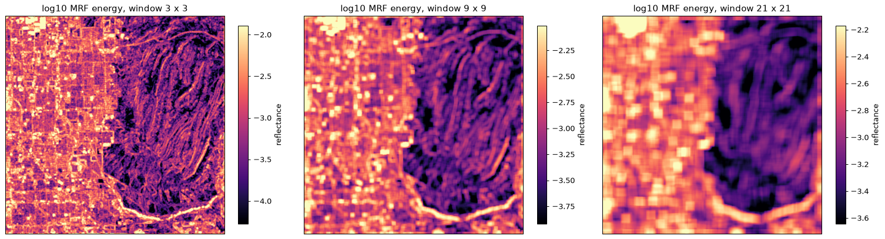
A 3 × 3 window maps individual streets and ridge lines; a 21 × 21 window (630 m) maps neighbourhoods. The window does not change the contrast between surfaces, only the scale at which it is shown.
Fractal dimension
Differential box-counting step by step
We implement the box count for one 32 × 32 tile in each sample box and fit the log-log line. This is the same calculation tx.fractal_dimension performs for every tile.
Code
def dbc_counts(tile, box_sizes=(2, 4, 8, 16)): # differential box counting on a square tile"""Differential box-counting: total box count N_r for each box size r.""" size = tile.shape[0] # tile side in pixels t = (tile - tile.min()) /max(tile.max() - tile.min(), 1e-9) * size # intensity scaled to the grid size counts = [] # N_r for each box sizefor r in box_sizes: # loop over box sizes n = size // r # boxes per side cells = t[:n * r, :n * r].reshape(n, r, n, r) # split the tile into n x n blocks of r x r pixels lo, hi = cells.min(axis=(1, 3)), cells.max(axis=(1, 3)) # lowest and highest intensity in each block# boxes of height r needed to cover the intensity range of each block, summed counts.append(np.sum(np.ceil(hi / r) - np.floor(lo / r) +1))return np.array(counts, float) # N_r as floatsr = np.array([2, 4, 8, 16]) # box sizesfig, axes = plt.subplots(1, 4, figsize=(19, 4.3)) # three tiles and the fit plotfor k, (name, (ys, xs)) inenumerate(BOXES.items()): # one tile per sample box# the central 32 x 32 pixels of the box tile = nir.values[ys.start +4:ys.start +36, xs.start +4:xs.start +36] N = dbc_counts(tile) # box counts D, b = np.polyfit(np.log(1/ r), np.log(N), 1) # slope of log N_r against log(1/r) = fractal dimension D axes[k].imshow(tile, cmap="gray"); axes[k].set_title(f"{name}: D = {D:.3f}") # the tile with its D axes[k].set_xticks([]); axes[k].set_yticks([]) # no ticks axes[3].plot(np.log(1/ r), np.log(N), "o", color=COLORS[name]) # the counts# the fitted line axes[3].plot(np.log(1/ r), D * np.log(1/ r) + b, "-", color=COLORS[name], label=f"{name} (D = {D:.3f})")axes[3].set(xlabel="log(1 / r)", ylabel="log N_r", title="Box-counting fits") # labelsaxes[3].legend(fontsize=8) # legendplt.tight_layout(); plt.show() # arrange and draw
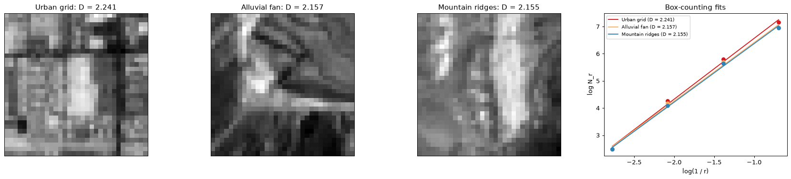
The log-log points lie almost on straight lines, as the power law predicts. The urban tile is the roughest (D = 2.24), and the fan and ridge tiles are nearly equal (2.16). The lines are close together: fractal dimension differences between surfaces are small at this resolution.
Code
# Fractal dimension of synthetic fractional Brownian-like surfaces with known roughness.def fbm_surface(h, n=256, seed=0): # a random surface whose roughness is set by h"""Spectral synthesis of a fractional Brownian surface with Hurst exponent h (D = 3 - h).""" rng = np.random.default_rng(seed) # random generator# squared spatial frequency of every FFT cell k = np.fft.fftfreq(n)[:, None] **2+ np.fft.fftfreq(n)[None, :] **2 k[0, 0] =1# avoid dividing by zero at frequency 0 amp = k ** (-(h +1) /2) # amplitude falls with frequency as a power law phase = np.exp(2j* np.pi * rng.random((n, n))) # random phasesreturn np.real(np.fft.ifft2(amp * phase)) # inverse FFT gives the surfacerows = [] # one row per Hurst exponentfor h in [0.2, 0.5, 0.8]: # rough (0.2) to smooth (0.8) s = fbm_surface(h) # the surface fd_s = tx.fractal_dimension(s, size=32, step=16) # D in 32 x 32 tiles every 16 pixels# theoretical vs estimated D rows.append({"Hurst H": h, "theoretical D = 3 - H": 3- h, "estimated D (median)": float(np.nanmedian(fd_s))})# show the tablepd.DataFrame(rows).round(3)
Hurst H
theoretical D = 3 - H
estimated D (median)
0
0.2
2.8
2.180
1
0.5
2.5
2.092
2
0.8
2.2
2.027
Box-counting with only four box sizes on 32 × 32 tiles is strongly biased: all three estimates lie between 2.03 and 2.18, far below the theoretical 2.2 to 2.8. The ranking is still correct, and rougher surfaces always get a higher estimate. This is how fractal dimension should be used in practice: as a relative measure of roughness, compared only between estimates made with the same tile and box sizes.
Fractal dimension map
tx.fractal_dimension(img, size, step, box_sizes) estimates D in a size × size tile every step pixels. All box sizes must divide the tile size evenly.
Code
t0 = time.time() # start the timerfd = tx.fractal_dimension(nir, size=32, step=4, box_sizes=(2, 4, 8, 16)) # 32 x 32 tiles every 4 pixels# 64 x 64 tiles every 8 pixels, one more box sizefd64 = tx.fractal_dimension(nir, size=64, step=8, box_sizes=(2, 4, 8, 16, 32))print(f"fractal_dimension x2: {time.time() - t0:.1f} s") # run time# spread of D over the windowprint("D (32 x 32 tiles), 5th/50th/95th percentile:", np.round(np.nanpercentile(fd, [5, 50, 95]), 3))fig, axes = plt.subplots(1, 2, figsize=(13, 5.5)) # two panels# 32-pixel tilesrs.viz.plot_raster(fd, ax=axes[0], cmap="viridis", title="Fractal dimension, 32 x 32 tiles (960 m)")# 64-pixel tilesrs.viz.plot_raster(fd64, ax=axes[1], cmap="viridis", title="Fractal dimension, 64 x 64 tiles (1.9 km)")for a in axes: # no ticks a.set_xticks([]); a.set_yticks([])plt.tight_layout(); plt.show() # arrange and draw
fractal_dimension x2: 2.5 s
D (32 x 32 tiles), 5th/50th/95th percentile: [2.088 2.162 2.246]
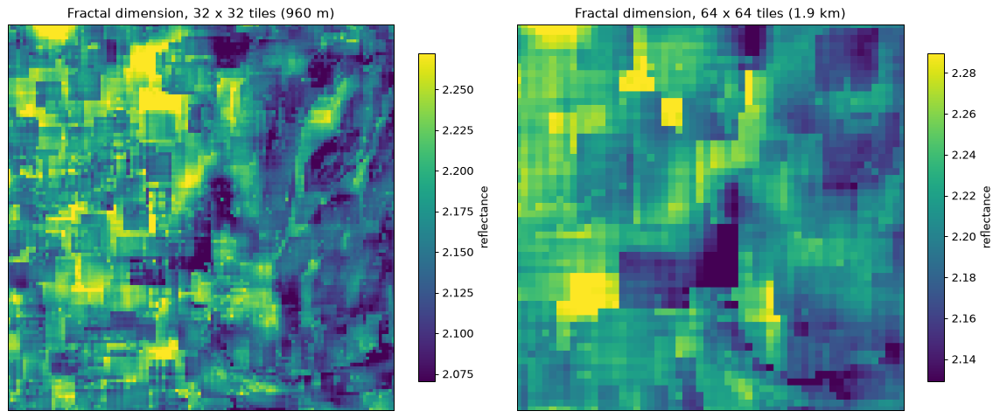
D varies between about 2.09 and 2.25. With 64 × 64 tiles the urban box reaches 2.26 against 2.15 on the fan and 2.17 on the ridges. The maps are blocky because each value describes a whole tile; the city is generally rougher, but the contrast is weaker than for MRF energy.
Autoregressive texture
The model in each sample box
For each box we plot every pixel against the mean of its 4 neighbours and fit the regression line. The slope is ρ and the scatter around the line is the residual.
Code
a = nir.fillna(float(nir.mean())).values # NIR as an array, NaN -> mean# mean of the four neighbours (np.roll shifts the image by one pixel)nbr = (np.roll(a, 1, 0) + np.roll(a, -1, 0) + np.roll(a, 1, 1) + np.roll(a, -1, 1)) /4fig, axes = plt.subplots(1, 3, figsize=(15, 4.5), sharex=False) # one scatter plot per boxrows = {} # AR parameters per boxfor ax, (name, (ys, xs)) inzip(axes, BOXES.items()): # loop over the boxes x_, y_ = nbr[ys, xs].ravel(), a[ys, xs].ravel() # neighbour mean (x) and pixel value (y) rho = np.cov(y_, x_)[0, 1] / np.var(x_, ddof=1) # least-squares slope: the AR coefficient# share of the variance the model does not explain resid = np.var((y_ - y_.mean()) - rho * (x_ - x_.mean())) / np.var(y_)# store rho, residual share and correlation rows[name] = {"rho": rho, "residual share": resid, "corr(pixel, nbr mean)": np.corrcoef(x_, y_)[0, 1]} ax.scatter(x_, y_, s=3, alpha=0.4, color=COLORS[name]) # pixel against neighbour mean xx = np.linspace(x_.min(), x_.max(), 2) # two x values to draw the line ax.plot(xx, y_.mean() + rho * (xx - x_.mean()), "k-") # the fitted line ax.set(xlabel="Mean of 4 neighbours", ylabel="Pixel", title=f"{name}: rho = {rho:.2f}") # labelsplt.tight_layout(); plt.show() # arrange and draw# show the tablepd.DataFrame(rows).round(3)
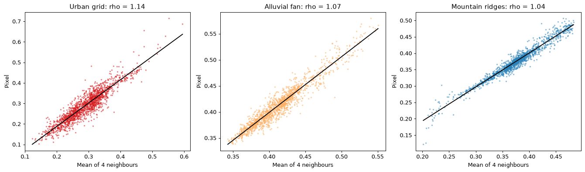
Urban grid
Alluvial fan
Mountain ridges
rho
1.136
1.067
1.039
residual share
0.151
0.080
0.049
corr(pixel, nbr mean)
0.922
0.959
0.975
The ridges are the most coherent surface: a pixel is almost fully predicted by its neighbours (correlation 0.975, residual share 5%). The fan follows (0.96, 8%), and the city is the least coherent (0.92, 15%). ρ is above 1 in all three boxes (1.04 to 1.14), as explained in the theory section.
tx.autoregressive_texture(img, size) computes ρ and the residual share in every size × size window with box filters (closed form, no loop), so it is fast even on large images.
Code
t0 = time.time() # start the timerar = tx.autoregressive_texture(nir, size=9) # rho and residual share in 9 x 9 windowsar15 = tx.autoregressive_texture(nir, size=15) # the same in 15 x 15 windowsprint(f"autoregressive_texture x2: {time.time() - t0:.2f} s ->", list(ar.data_vars)) # run time and layer namesfig, axes = plt.subplots(2, 2, figsize=(13, 11)) # 2 x 2 panelsrs.viz.plot_raster(ar["rho"], ax=axes[0, 0], cmap="RdYlBu_r", title="AR rho, 9 x 9") # rho, 9 x 9# residual share, 9 x 9rs.viz.plot_raster(ar["residual"], ax=axes[0, 1], cmap="magma", title="AR residual share, 9 x 9")rs.viz.plot_raster(ar15["rho"], ax=axes[1, 0], cmap="RdYlBu_r", title="AR rho, 15 x 15") # rho, 15 x 15# residual share, 15 x 15rs.viz.plot_raster(ar15["residual"], ax=axes[1, 1], cmap="magma", title="AR residual share, 15 x 15")for a_ in axes.ravel(): # no ticks a_.set_xticks([]); a_.set_yticks([])plt.tight_layout(); plt.show() # arrange and draw
autoregressive_texture x2: 0.09 s -> ['rho', 'residual']
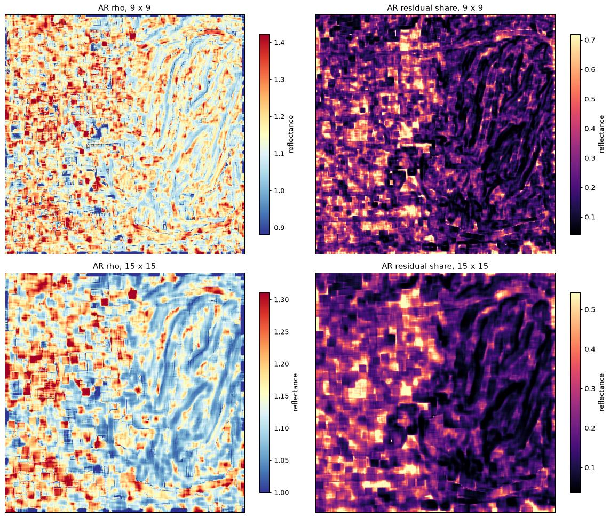
ρ is highest on block-sized city patches and lowest along sharp ridge lines. The residual is high where the simple model fails: isolated bright roofs, the edges of the Wash and the city blocks. A larger window (15 × 15) gives smoother, lower residuals, because more pixels average out local surprises.
Model-based texture of the full scene
MRF energy and the AR model use box filters and run on the whole 1,679 × 1,512 scene in about a second. Fractal dimension loops over tiles; with 32 × 32 tiles every 8 pixels the full scene takes about 20 seconds.
Code
t0 = time.time() # start the timermrf_full = tx.mrf_texture_energy(ls["nir"], size=9) # MRF energy of the whole scenefd_full = tx.fractal_dimension(ls["nir"], size=32, step=8) # fractal dimension of the whole scenear_full = tx.autoregressive_texture(ls["nir"], size=9) # autoregressive texture of the whole sceneprint(f"Full scene, three model-based measures: {time.time() - t0:.1f} s") # run timefig, axes = plt.subplots(1, 3, figsize=(20, 6)) # three panels# log MRF energyrs.viz.plot_raster(np.log10(mrf_full), ax=axes[0], cmap="magma", title="log10 MRF energy (9x9)")# fractal dimensionrs.viz.plot_raster(fd_full, ax=axes[1], cmap="viridis", title="Fractal dimension (32x32 tiles)")# AR residual sharers.viz.plot_raster(ar_full["residual"], ax=axes[2], cmap="magma", title="AR residual share (9x9)")for a_ in axes: # for each panel: a_.add_patch(Rectangle((900, 500), 512, 512, fill=False, ec="cyan", lw=1.5)) # mark the study window a_.set_xticks([]); a_.set_yticks([]) # no ticksplt.tight_layout(); plt.show() # arrange and draw
Full scene, three model-based measures: 4.7 s
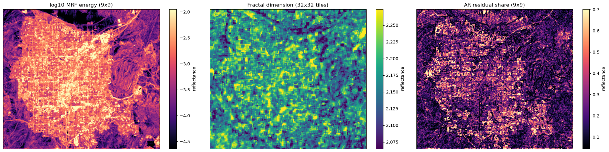
MRF energy outlines the urbanized valley sharply: the city has roughly 10 to 50 times the energy of the surrounding desert. Fractal dimension shows little contrast at scene scale: the city is only slightly rougher than the desert and mountains. The AR residual highlights the city and the edges of drainage channels.
Application: texture signatures and clustering
Three 40 × 40 pixel boxes (1.2 × 1.2 km), chosen by eye on the false-colour image, are used to compare texture signatures:
Box
Rows
Columns
Surface
Urban grid
100-140
40-80
Residential blocks and streets
Alluvial fan
300-340
270-310
Smooth bare desert soil
Mountain ridges
130-170
400-440
Folded sedimentary ridges of Frenchman Mountain
Code
# three 40 x 40 pixel sample boxes (rows, columns) in the study windowBOXES = {"Urban grid": (slice(100, 140), slice(40, 80)),"Alluvial fan": (slice(300, 340), slice(270, 310)), # gravel slopes east of the city"Mountain ridges": (slice(130, 170), slice(400, 440))} # rugged terrain# one colour per boxCOLORS = {"Urban grid": "#d7191c", "Alluvial fan": "#fdae61", "Mountain ridges": "#2b83ba"}fig, ax = plt.subplots(figsize=(6, 6)) # one panel# colour infrared backgroundrs.viz.plot_rgb(sub, "false_color", ax=ax, title="Sample boxes on the study window")for name, (ys, xs) in BOXES.items(): # draw each box# x = column start, y = row start, then width and height ax.add_patch(Rectangle((xs.start, ys.start), xs.stop - xs.start, ys.stop - ys.start,# outline only, labelled for the legend fill=False, ec=COLORS[name], lw=2.5, label=name))ax.legend(loc="lower left", fontsize=8); ax.set_xticks([]); ax.set_yticks([]) # legend, no ticksplt.show() # draw
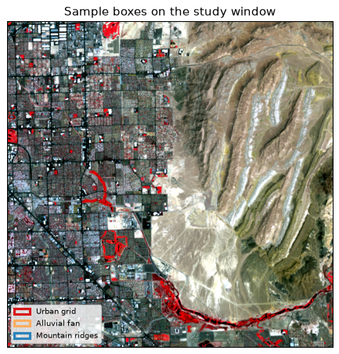
Code
from sklearn.cluster import KMeans # k-means clusteringfrom sklearn.preprocessing import StandardScaler # standardise features to mean 0, std 1from scipy.ndimage import generic_filter # moving-window filter for the speckle measuredef box_means(ds): # average feature values per sample box"""Mean of every variable of `ds` inside each sample box."""# rows = features, columns = boxesreturn pd.DataFrame({name: {v: float(ds[v].isel(y=ys, x=xs).mean()) for v in ds.data_vars}for name, (ys, xs) in BOXES.items()})def plot_signatures(sig, title): # compare the boxes feature by feature"""Bar chart of box means, min-max scaled per feature across the three boxes."""# scale each feature to 0-1 across the three boxes norm = sig.sub(sig.min(axis=1), axis=0).div(sig.max(axis=1) - sig.min(axis=1), axis=0) fig, ax = plt.subplots(figsize=(max(7, 0.75*len(norm)), 4.5)) # width grows with the number of features x = np.arange(len(norm)) # one group of bars per featurefor k, name inenumerate(norm.columns): # one bar per box, shifted sideways ax.bar(x + (k -1) *0.27, norm[name], width=0.27, color=COLORS[name], label=name) # draw the bars ax.set_xticks(x, norm.index, rotation=45, ha="right") # feature names, rotated ax.set(ylabel="Relative value (0 = lowest box, 1 = highest)", title=title) # labels ax.legend(); plt.tight_layout(); plt.show() # legend and drawdef kmeans_map(ds, k=5, n_fit=40000, seed=0): # unsupervised map from a set of layers"""Standardize the layers, fit k-means on a random pixel sample and label every pixel.""" df = ds.to_dataframe(dim_order=["y", "x"])[list(ds.data_vars)] # pixels as rows, layers as columns ok = df.notna().all(axis=1).values # pixels without missing values X = StandardScaler().fit_transform(df[ok].values) # standardise so every layer weighs the same rng = np.random.default_rng(seed) # random sample generator# fit on at most 40,000 random pixels (faster) km = KMeans(k, n_init=10, random_state=seed).fit(X[rng.choice(len(X), min(n_fit, len(X)), replace=False)]) lab = np.full(ok.size, np.nan); lab[ok] = km.predict(X) # label all valid pixels; others stay NaN# labels back on the image gridreturn xr.DataArray(lab.reshape(ds.sizes["y"], ds.sizes["x"]), coords={"y": ds.y, "x": ds.x}, dims=("y", "x"))def speckle(lab): # how noisy a cluster map is"""Share of pixels whose label differs from the majority label of their 3 x 3 neighbourhood.""" a = np.nan_to_num(lab.values, nan=-1).astype(int) # NaN -> -1 so the labels are integers# majority label in each 3 x 3 window mode = generic_filter(a, lambda v: np.bincount(v.astype(int) +1).argmax() -1, size=3)returnfloat((a != mode).mean()) # share of pixels that differ from their neighbourhood majoritydef box_purity(lab): # how uniform each box is in a cluster map"""Share of each box's pixels that fall in the box's most common cluster.""" out = {} # one value per boxfor name, (ys, xs) in BOXES.items(): # loop over the boxes v = lab.isel(y=ys, x=xs).values.ravel() # labels inside the box v = v[np.isfinite(v)].astype(int) # drop missing labels out[name] = np.bincount(v).max() / v.size # share of the most common labelreturn out # dictionary box -> purity# Spectral layers used as the baseline in every notebook: the four bands and NDVI.# normalised difference vegetation indexndvi = ((sub["nir"] - sub["red"]) / (sub["nir"] + sub["red"])).rename("NDVI")spectral = xr.Dataset({**{b: sub[b] for b in BANDS}, "NDVI": ndvi}) # four bands plus NDVI
Code
mb_feats = xr.Dataset({ # the model-based layers of this notebook"log10 MRF energy (4)": np.log10(mrf4), "MRF 8/4 ratio": mrf8 / mrf4, # MRF energy and the 8/4 ratio"Fractal dim. (32)": fd, "Fractal dim. (64)": fd64, # fractal dimension at two tile sizes"AR rho (9)": ar["rho"], "AR residual (9)": ar["residual"], # AR parameters, 9 x 9"AR rho (15)": ar15["rho"], "AR residual (15)": ar15["residual"], # AR parameters, 15 x 15})sig = box_means(mb_feats) # mean of each feature in each box# show the tablesig.round(4)
Urban grid
Alluvial fan
Mountain ridges
log10 MRF energy (4)
-2.5912
-3.4451
-3.4342
MRF 8/4 ratio
1.3333
1.2809
1.3177
Fractal dim. (32)
2.2054
2.1801
2.1465
Fractal dim. (64)
2.2581
2.1536
2.1745
AR rho (9)
1.1700
1.1641
1.1155
AR residual (9)
0.2251
0.2214
0.1522
AR rho (15)
1.1472
1.1302
1.0904
AR residual (15)
0.1791
0.1668
0.1004
Code
plot_signatures(sig, "Model-based texture signatures (NIR)") # bar chart of the box signatures
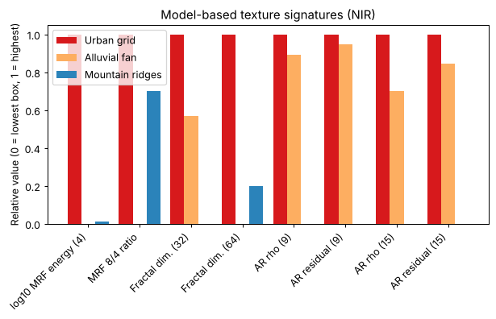
MRF energy and the 64 × 64 fractal dimension are highest in the city. The ridges have the lowest AR ρ and residual (the most coherent surface); the fan and the city have similar AR values at 9 × 9.
Code
mdf = mb_feats.to_dataframe()[list(mb_feats.data_vars)].dropna() # pixels as rows, features as columnsmc = mdf.corr() # Pearson correlationnames =list(mb_feats.data_vars) # feature names for the axesfig, ax = plt.subplots(figsize=(7.5, 6.5)) # one panelim = ax.imshow(mc, cmap="RdBu_r", vmin=-1, vmax=1) # the correlation matrix# labels on both axesax.set_xticks(range(len(names)), names, rotation=60, ha="right"); ax.set_yticks(range(len(names)), names)for i inrange(len(names)): # write each value in its cellfor j inrange(len(names)): # columns ax.text(j, i, f"{mc.iloc[i, j]:.2f}", ha="center", va="center", fontsize=7) # two decimalsplt.colorbar(im, shrink=0.8); ax.set_title("Correlation among model-based features") # colour bar and titleplt.tight_layout(); plt.show() # arrange and draw
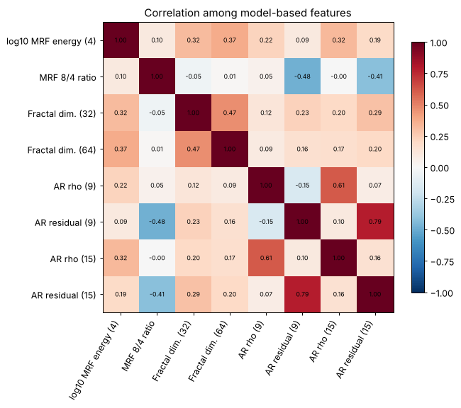
The model-based features are much less redundant than the statistical or transform features. The two AR residuals (r = 0.79) and the two ρ values (0.61) repeat each other across windows, and the two fractal dimensions agree only moderately (0.47). Across families, correlations are weak (|r| ≤ 0.48).
Does this family add information? A clustering test
Texture is useful only if it carries information that the spectral bands do not. We run k-means with 5 clusters on (a) the four bands and NDVI only and (b) the same spectral layers plus this notebook’s texture features, all standardized. Two numbers summarize the maps:
Speckle: the share of pixels whose cluster differs from the majority of their 3 × 3 neighbourhood (lower = more spatially coherent).
Purity: the share of pixels in each sample box that fall in that box’s most common cluster (higher = the surface is mapped as one unit).
Code
def compare_clusterings(texture_ds, label): # clustering with and without the texture layers"""k-means on spectral layers only vs spectral + texture layers; maps, speckle and box purity.""" k_spec = kmeans_map(spectral) # five spectral layers k_both = kmeans_map(xr.merge([spectral, texture_ds], compat="override")) # spectral plus texture layers fig, axes = plt.subplots(1, 3, figsize=(18, 6)) # three panels rs.viz.plot_rgb(sub, "false_color", ax=axes[0], title="Colour infrared") # reference imagefor ax, lab, t inzip(axes[1:], [k_spec, k_both], # the two cluster maps with their titles ["k-means, spectral only (5 layers)",f"k-means, spectral + {label} ({5+len(texture_ds.data_vars)} layers)"]): ax.imshow(lab, cmap="Set2", interpolation="nearest") # one colour per cluster ax.set_title(f"{t}\nspeckle = {speckle(lab):.1%}") # title with the speckle sharefor a in axes: # no pixel ticks a.set_xticks([]); a.set_yticks([]) plt.tight_layout(); plt.show() # arrange and drawreturn pd.DataFrame({"spectral only": box_purity(k_spec), # box purity of both maps, as percentages# format each value as a percentagef"spectral + {label}": box_purity(k_both)}).map(lambda v: f"{v:.0%}")
Code
compare_clusterings(mb_feats, "model-based texture") # maps, speckle and box purity
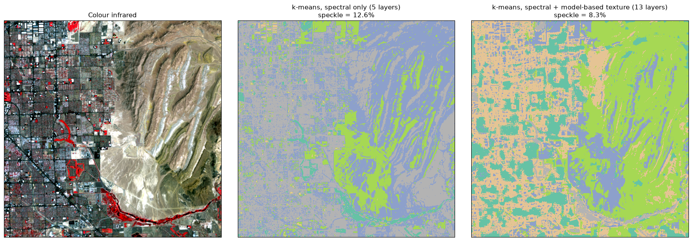
spectral only
spectral + model-based texture
Urban grid
53%
76%
Alluvial fan
58%
47%
Mountain ridges
66%
77%
Model-based texture reduces speckle from 12.6% to 8.4% and raises purity in the city (53% to 76%) and on the ridges (66% to 78%). The fan, however, is split between two clusters (purity 48%): the AR residual and fractal dimension vary across the fan’s gullies and roads. These layers work best combined with the roughness measures of notebook 09_07_01.
Code
OUT = Path("outputs") /"texture"# output folder for texture rastersOUT.mkdir(parents=True, exist_ok=True) # create it if needed# Dataset -> one multi-band GeoTIFF (one band per feature)mb_feats.to_array("feature").astype("float32").rio.write_crs(ls.rio.crs).rio.to_raster(OUT /"nir_model_texture.tif")with rasterio.open(OUT /"nir_model_texture.tif") as src: # read the file back to check it# number of bands, size and CRSprint(f"nir_model_texture.tif: {src.count} bands, {src.width} x {src.height}, {src.crs}")
nir_model_texture.tif: 8 bands, 512 x 512, EPSG:32611
Summary and exercises
Key points
Model-based texture fits a spatial stochastic model and uses its parameters as features.
MRF clique energy measures how strongly neighbours disagree under a smoothness prior; white noise of unit variance has energy 2, correlated surfaces much less.
Fractal dimension measures the roughness of the intensity surface. Box-counting estimates are biased but rank surfaces correctly, so use D as a relative measure.
The AR coefficient ρ measures spatial coherence and the residual share the variation the neighbours cannot explain. ρ slightly above 1 is expected for partly correlated images.
MRF energy and the AR model run on full scenes in about a second, which makes them practical predictors for large-area mapping.
Use more box sizes (2, 4, 8, 16, 32) on 64 × 64 tiles for the synthetic fBm surfaces. Does the estimate get closer to the theoretical D?
Compute MRF energy on NDVI. Which surfaces have the most “texture” in vegetation rather than in brightness?
Extend the AR model to separate horizontal and vertical neighbours (two coefficients). Do the two coefficients differ on the ridges?
Apply the three measures to a Sentinel-1 VV backscatter image in dB. How does speckle affect each one?
Compare the fractal dimension map with a slope map from a DEM of the same area.
References
Cross, G.R. and Jain, A.K. (1983). Markov random field texture models. IEEE TPAMI, 5(1), 25-39.
Geman, S. and Geman, D. (1984). Stochastic relaxation, Gibbs distributions, and the Bayesian restoration of images. IEEE TPAMI, 6(6), 721-741.
Kashyap, R.L. and Chellappa, R. (1983). Estimation and choice of neighbors in spatial-interaction models of images. IEEE Transactions on Information Theory, 29(1), 60-72.
Mandelbrot, B.B. (1982). The Fractal Geometry of Nature. W.H. Freeman.
Mao, J. and Jain, A.K. (1992). Texture classification and segmentation using multiresolution simultaneous autoregressive models. Pattern Recognition, 25(2), 173-188.
Sarkar, N. and Chaudhuri, B.B. (1994). An efficient differential box-counting approach to compute fractal dimension of image. IEEE Transactions on Systems, Man, and Cybernetics, 24(1), 115-121.